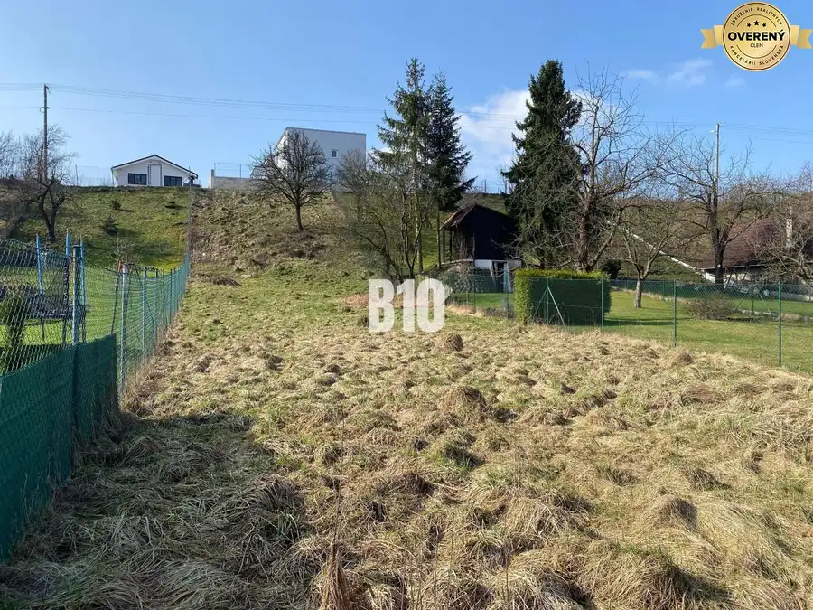
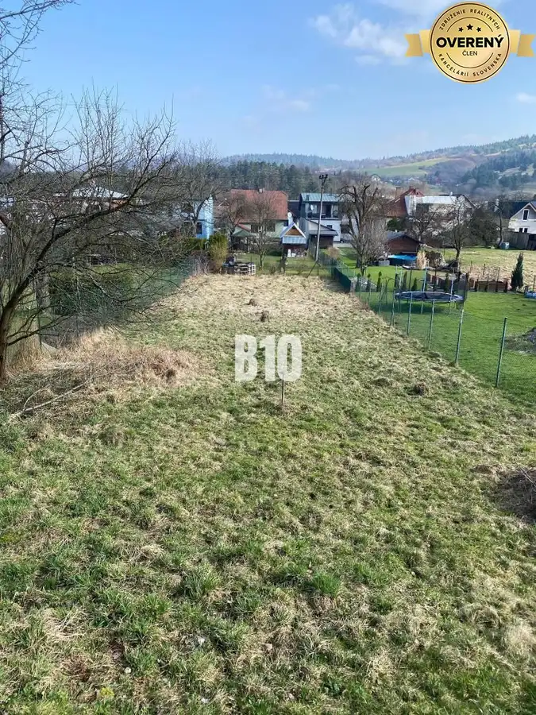

Predaj · Pozemok
Slnečná záhrada v obci Radoľa na predaj
Radoľa
32 000 €40 € za m²



- Plocha800 m²
- Vlastníctvoosobné
O nehnuteľnosti
B10 Vám ponúka na predaj Skvelá cena - Slnečná záhrada v obci Radoľa s možnosťou drobnej stavbyrozloha pozemku 800 m2pozemok svahovitývykopaná vlastná studňamožnosť pripojenia na elektrinuprístupová cesta aktuálne betón,výstavba asfaltovej v priebehu 1rokav blízkosti občianska vybavenosťpríjemné prostredieV prípade záujmu o obhliadku alebo bližšie informácie nás neváhajte kontaktovať Cena: 32 000,-EurAj váš dom, byt alebo pozemok predáme na počkanie #pocelomslovensku
Parametre
- Dátum zverejnenia
- 2026-10-09
- Rozloha pozemku
- 800 m²
- Status
- aktívne
- Terén
- svahovitý
- Vlastníctvo
- osobné
- Úžitková plocha
- 800 m²
Kde to je
Ďalšie ponuky
Celá ponuka